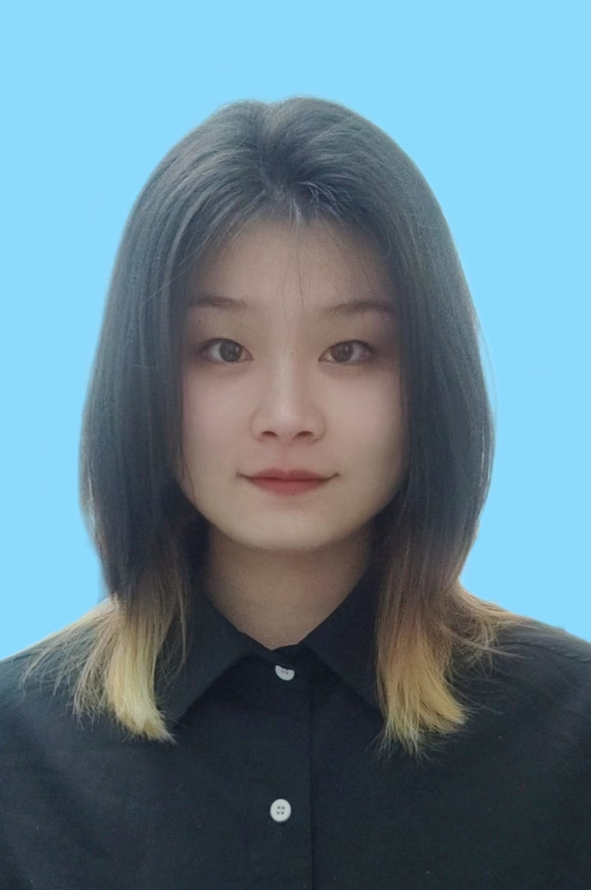

付钰帆
- 年龄：22岁
- 求职意向：视频策划编辑
- 联系方式：18772468700
- 邮箱：fuyufanhappy@163.com

教育经历
三峡大学 数字媒体技术专业 一本 2016 年 9 月 - 2020 年 6 月
- 主修课程：摄影摄像技术，电视节目编导与制作技术，游戏设计与制作，二维动画制作，程序设计基础等。
实践经历
中软国际有限公司 实习 2019 年 7 月 - 2019 年 9 月
网站美工 宜昌
- 团队合作完成了一项完整的网站设计与实现项目，主要负责网站U1 设计和美工，在最终小组评比中荣获第二名（共10组）。
勒蚁花蝶文化传媒有限公司 自主创业 2017 年 1 月 - 2018 年 6 月
短视频编导拍摄 宜昌
- 主要负责微电影、搞笑短视频、街访视频等内容的选题策划和脚本分镜撰写，熟悉当下热点，高效产出内容。
- 组织跟进中期拍摄，负责现场各个场面的调度和片场人员的管理。
- 成果：参与制作微电影作品《毒戒》荣获 2017 年宜昌市西陵区禁毒主题莞赛三等奖；微电影 《诈骗风云》荣获三峽大学安全微视频大赛一等奖：导演拍摄微电影 《第三种语言》荣获三峡大学心理微电影大赛优秀奖。
宜昌拾一民宿 2017 年 1 月 - 2018 年 1 月
摄影师兼职 宜昌
- 负责民宿宣传平面广告拍摄，拍摄作品已上线美团等 App 商用。
相约台北婚纱摄影 实习 2017 年 6 月 - 2017 年 8 月
编导摄影助理 黄冈
- 协助摄影币完成每日的拍摄任务，负费拍摄时灯光、布景以及人物的把控。
- 协助跟进影楼宣传短片拍摄，负责宣传片的选题策划和分镜脚本撰写，曾协助策划完成了一次大型线下视频宣传推广活动。
个人能力
- 大学时期组建过自媒体团队，熟悉短视频创作流程，能结合当下时事热点，独立完成微电影以及短视频的选题策划、拍摄及剪辑。
- 了解抖音、B站等社交媒体平台创作机制，网感好，编导拍摄的毕业短片《千杯》 在流媒体平台一天内达到 4 万次播放量。
- 具备剧本写作能力，有一定文字功底，创意能力强，能根据选题独立撰写分场脚本或分镜头脚本。
- 具有新媒体运营经验，掌握文案的策划和后期排版，能熟练使用公众号编相工具，例如秀米、365 编辑器等，
- 熟悉索尼、佳能等单反相机操作，会拍摄，了解摄影构图及镜头语言。
- 熟悉数码照片后期修图以及视频后期剪辑，熟练掌握 PS. PR. AU、 Final cut pro、Ofice 等一系列软件的操作。
- 了解 3dsMax, TVP Animation， MAYA 动画制作软件基本操作，有基本的手绘技能。
- 获得英语四六级证书，英语口语四六级证书，全国计算机等级考试二级证书，全国普通话水平测试等级证书（二级甲等）。
自我评价
- 本人热爱摄影和视频创作，有想法，创意能力强，熟悉视频制作流程，能独立完成整个项目的策划及后期制作。
- 拥有良好的团队意识和责任感，组织能力强，学习能力强，有好奇心，喜爱并善于探索新知识。
- 自我驱动力强，能吃苦，适应能力强，能接受合理的加班和出差。